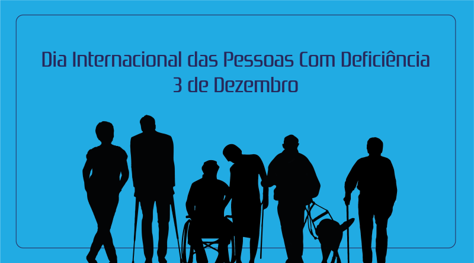

O Dia Internacional da Pessoa com Deficiência é realizado anualmente em 3 de dezembro . Um dado foi instituído em 1992 pela Organização das Nações Unidas (ONU) , com o objetivo de promover os direitos e o bem-estar das pessoas com deficiência em todas as esferas da sociedade, além de conscientizar sobre sua inclusão e combater preconceitos.
Objetivos da Data
- Conscientizar sobre os direitos das pessoas com deficiência, conforme previsto na Convenção sobre os Direitos das Pessoas com Deficiência (CRPD) da ONU.
- Promover a inclusão social e a acessibilidade em espaços públicos, transporte, educação, saúde e no mercado de trabalho.
- Eliminar estigmas e preconceitos , incentivando a construção de uma sociedade mais justa e igualitária.
- Destacar os desafios enfrentados por pessoas com deficiência e propor soluções colaborativas.
Definição de Deficiência
De acordo com a ONU, a deficiência não é apenas uma condição médica, mas uma interação entre as limitações de uma pessoa e as barreiras físicas, sociais e comportamentais pela sociedade. A ideia é promover uma abordagem inclusiva, focando na remoção dessas barreiras.
Temas Anuais
A cada ano, a ONU escolhe um tema específico para os dados, relacionados à inclusão e aos direitos das pessoas com deficiência. Esses temas frequentemente destacam aspectos como tecnologia assistiva, inclusão no mercado de trabalho e o impacto das políticas globais.
Importância da Data
- Representatividade : Aproximadamente 15% da população mundial (cerca de 1 bilhão de pessoas) vive com algum tipo de deficiência, segundo a Organização Mundial da Saúde (OMS).
- Desafios : Muitas dessas pessoas enfrentam dificuldades de acesso à educação, saúde e trabalho, além de sofrerem discriminação.
- Avanços : Um dado é uma oportunidade para celebrar conquistas, como leis de acessibilidade, avanços tecnológicos e programas de inclusão social.
Atividades Comuns no Dia
- Campanhas de conscientização : Exposição sobre os direitos e histórias de pessoas com deficiência.
- Seminários e palestras : Discussões sobre políticas públicas inclusivas.
- Eventos culturais e esportivos : Promoção de talentos e habilidades de pessoas com deficiência.
- Ações de inclusão : Adaptação de espaços e melhorias em acessibilidade.